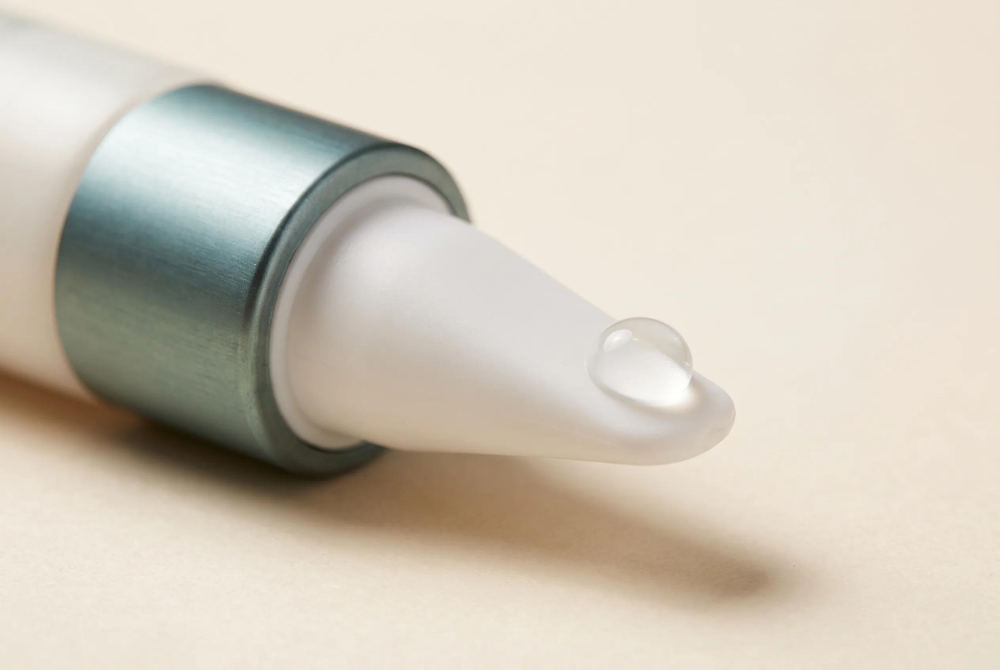

Ingredients
Hydrolysed Collagen in Skincare: Myth or Miracle?
The skincare world is divided on collagen. One camp insists that collagen molecules are too large to penetrate the skin, making topical application pointless. The other camp points to clinical studies showing measurable improvements in elasticity and wrinkle depth. Both can't be right — or can they?
In This Article
The answer depends on what you mean by "collagen" — and on what you expect it to do.
The Molecular Weight Problem
Native collagen — the structural protein found in skin, bones, and connective tissue — has a molecular weight of approximately 300,000 daltons. The skin's barrier, the stratum corneum, blocks molecules larger than about 500 daltons. By that measure, native collagen has no chance of penetrating.
But hydrolysed collagen is different. The hydrolysis process breaks the large protein chains into smaller peptides and amino acids. Depending on the degree of hydrolysis, these fragments can range from 1,000 daltons down to under 300 daltons — small enough to pass through the barrier.
The key variable is the degree of hydrolysis. Not all "hydrolysed collagen" is the same. A loosely hydrolysed product might contain peptides of 5,000–10,000 daltons that won't penetrate. A more aggressively hydrolysed product might contain peptides under 500 daltons that can reach the dermis.
At Zero Lines, we use collagen hydrolysed to an average molecular weight of 3,000 daltons — a deliberate compromise. Smaller peptides penetrate deeper but are less stable. Larger peptides are more stable but sit on the surface. Our target size balances penetration with structural integrity.
What Happens When It Gets Through?
Here's where the science gets interesting. Even when collagen peptides penetrate, they don't integrate into the skin's existing collagen matrix. That was never the goal. Instead, they act as signalling molecules — essentially tricking fibroblasts into thinking collagen has been damaged, triggering a repair response.
This is called the "matrikine" effect. Collagen-derived peptides mimic the body's natural wound-healing signals, stimulating fibroblasts to produce new collagen, elastin, and hyaluronic acid. The peptides themselves don't become structural collagen — they trigger the cells that do.
Multiple studies support this mechanism:
- A 2014 randomised controlled trial found that oral hydrolysed collagen improved skin elasticity by 18% after 8 weeks.
- A 2021 review of topical peptide studies concluded that collagen-derived peptides consistently improved skin hydration, elasticity, and wrinkle depth when formulated at adequate concentrations.
- A 2019 study using confocal microscopy demonstrated that hydrolysed collagen peptides under 1,000 daltons could be detected in the dermis after topical application.
Oral vs. Topical: Which Works Better?
Both routes appear effective, through different mechanisms:
Topical hydrolysed collagen acts directly on the skin where applied. It provides immediate surface hydration (collagen peptides are humectants) and longer-term signalling effects. The limitation: it only affects the areas where it's applied.
Oral hydrolysed collagen is absorbed into the bloodstream as di- and tri-peptides, then distributed throughout the body. Studies show these peptides accumulate in skin tissue and stimulate fibroblast activity systemically. The limitation: it takes 8–12 weeks to show visible results.
Our view: both have value. The Precision Collagen Activation Syringe delivers topical peptides for targeted, immediate action. For those who want systemic support, we recommend adding a high-quality oral collagen supplement — though we don't currently produce one ourselves.
The Source Matters
Collagen can be derived from bovine, porcine, marine, or avian sources. Each has a different amino acid profile:
- Bovine: High in type I and III collagen, closely matching human skin collagen. Most extensively studied.
- Marine (fish): Smaller peptide size due to natural structure, potentially better absorption. Rich in type I.
- Porcine: Structurally similar to human collagen but avoided by some for religious or personal reasons.
We use bovine-derived hydrolysed collagen in our formulations — specifically type I collagen from grass-fed sources — because its amino acid profile most closely matches the collagen in human skin, and because the research base is strongest.
Does It Actually Work?
The honest answer: yes, but with caveats. Hydrolysed collagen is not a miracle ingredient that will erase deep wrinkles overnight. It is a well-supported ingredient that, when used consistently at adequate concentrations, improves skin hydration, elasticity, and fine lines over 8–12 weeks.
The key factors that determine effectiveness:
- Molecular weight: Must be low enough to penetrate. Look for products that specify peptide size or degree of hydrolysis.
- Concentration: Effective products typically contain 2–5% hydrolysed collagen. Below 1%, the signalling effect is minimal.
- Formulation pH: Collagen peptides are most stable at pH 5–7. Extreme acidity or alkalinity degrades them.
- Consistency: Like most skin-repair ingredients, collagen peptides require 8–12 weeks of daily use to show measurable results.

Precision Collagen Activation Syringe
Hydrolyzed collagen peptides (avg. 3,000 daltons) combined with botanical signal peptides. Clinical measurements show up to 34% improvement in collagen density over 12 weeks.
View Product →AI-Powered Analysis
See Your Skin Like Never Before
Upload a photo and answer 10 quick questions. Our AI analyses texture, tone, hydration, ageing signs, and lifestyle factors — then delivers a complete dermatologist-style report.
Analyse Your SkinThe Molecular Size Problem
Collagen is a large protein — a triple helix of amino acids with a molecular weight around 300,000 Daltons. Skin is designed to keep things out, not let them in. The stratum corneum, the skin's outermost layer, has a pore size of approximately 50–100 Daltons. A collagen molecule is roughly 3,000–6,000 times too large to penetrate.
Hydrolysis breaks collagen into smaller peptide fragments. "Hydrolysed collagen" in skincare typically contains fragments ranging from 1,000 to 10,000 Daltons. This is smaller than intact collagen, but still 10–200 times larger than what can penetrate the stratum corneum. Some manufacturers claim their hydrolysed collagen is "micronised" or "nano-sized" — but even at 500 Daltons, penetration is minimal and unreliable.
What Actually Works for Collagen
If hydrolysed collagen doesn't penetrate, what does? Signal peptides — short chains of 3–5 amino acids — are small enough to penetrate and have been shown to stimulate collagen synthesis from within. Vitamin C is essential for collagen cross-linking and stabilisation. Retinoids increase collagen production by directly influencing fibroblast gene expression. And UV protection prevents the degradation of existing collagen.
Our Collagen Syringe uses signal peptides rather than hydrolysed collagen. These peptides penetrate the stratum corneum and communicate with fibroblasts, triggering genuine collagen synthesis rather than merely applying a protein that sits on the surface.
"Hydrolysed collagen in skincare is the cosmetic equivalent of trying to fix a building's foundation by painting the walls. It looks like you're doing something, but nothing is actually changing structurally."
— Zero Lines Formulation Team
Sources & References
- Asserin J et al. The effect of oral collagen peptide supplementation on skin moisture and the dermal collagen network. Journal of Cosmetic Dermatology. 2015;14(4):291-301.
- Vollmer DL et al. Enhancing skin health by oral administration of natural compounds and minerals. Journal of Cosmetic Dermatology. 2018;17(6):1147-1158.
- Proksch E et al. Oral supplementation of specific collagen peptides has beneficial effects on human skin physiology. Skin Pharmacology and Physiology. 2014;27(1):47-55.
See If Collagen Support Is Right for You
Our AI Skin Analyser evaluates your skin's structural integrity and recommends whether collagen-targeted products should be in your protocol.
Analyse Your SkinRelated Reading


Explore Zero Lines
Experience signal peptides that actually penetrate in the Precision Collagen Activation Syringe, designed for measurable collagen density improvement over 12 weeks.